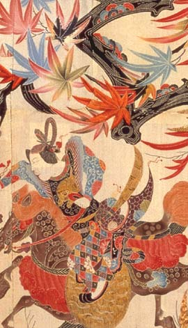

15th - 19th Centuries
5 February - 13 April 2003
Rooms 91 - 94
Admission £6 (£3 concessions)
- book
online
Free after 16.00 on Friday
| Saturday - Wednesday | 10.00 - 17.30 |
| Thursday - Friday | 10.00 - 20.30 |
Organised
by the Japan Society, New York and The British Museum,
in association with the Suntory Museum of Art, Tokyo.
Made
possible by Fidelity Investments through the Fidelity Foundation.
With gratitude to Mr Kazuo Okada for generous support through the Japan
Foundation
What
is Kazari?
Kazari
is the Japanese art and experience of arranging and displaying decorative
objects. It refers not only to the object, but also to its use in specific
settings and contexts, and requires the active participation of imagination
or memory. Stimulating the senses through the acts of viewing, using,
or adorning a work of art, kazari manifests the dynamism inherent in Japanese
aesthetics, and suggests the process that transforms the everyday into
something extraordinary.
|
The
exhibition The
catalogue The exhibition is co-curated by Nicole Coolidge Rousmaniere Sainsbury Institute for the Study of Japanese Art and Culture (SISJAC), London and Norwich, and Tsuji Nobuo, Tama Art University, Tokyo. |
| > more exhibitions | > Department of Japanese Antiquities |